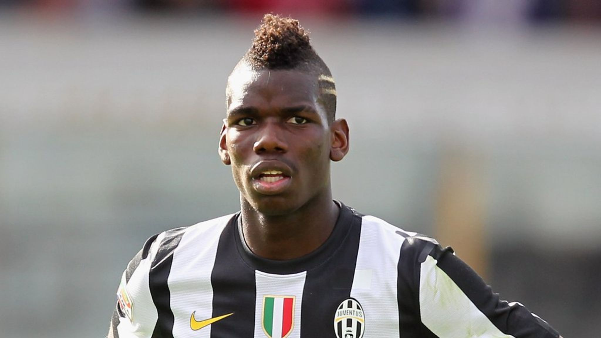
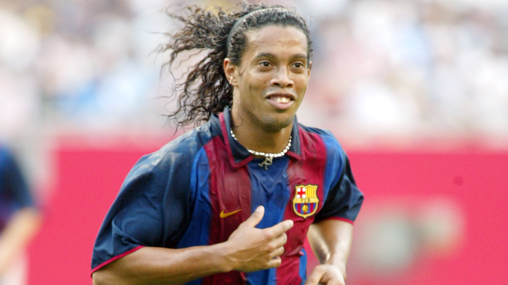
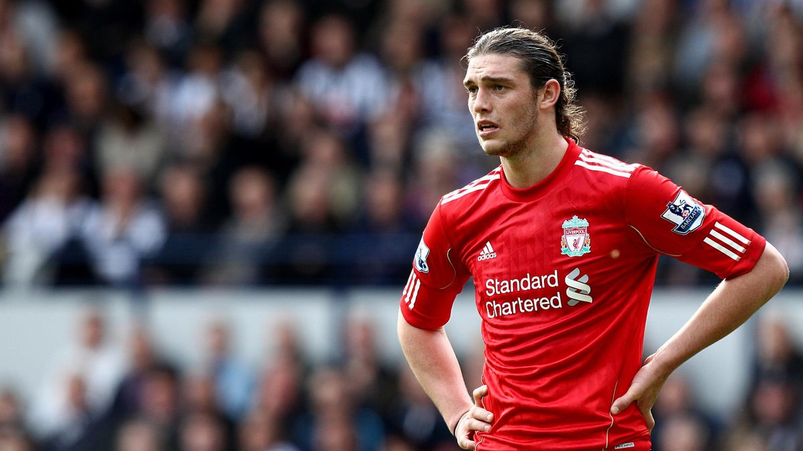
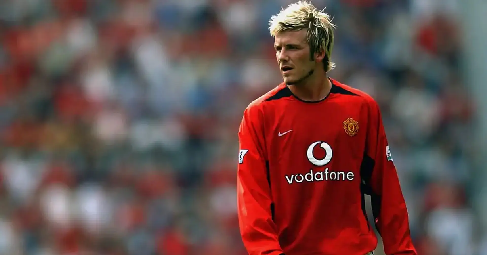
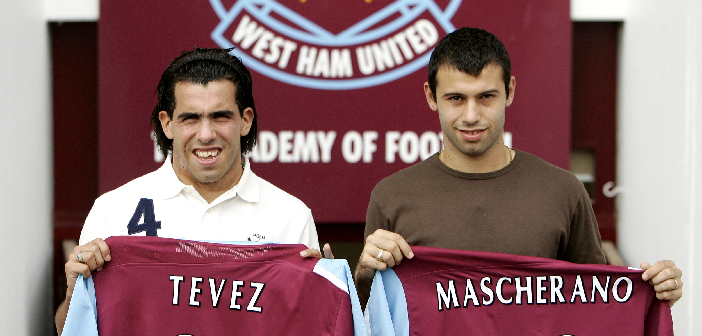
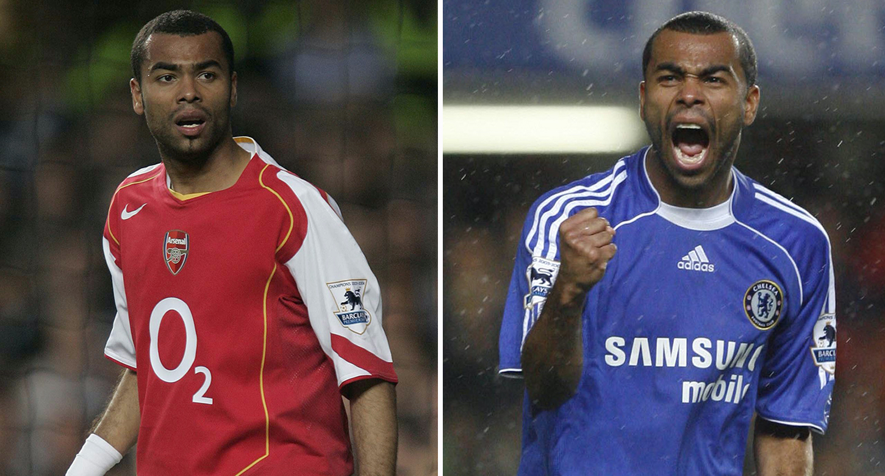
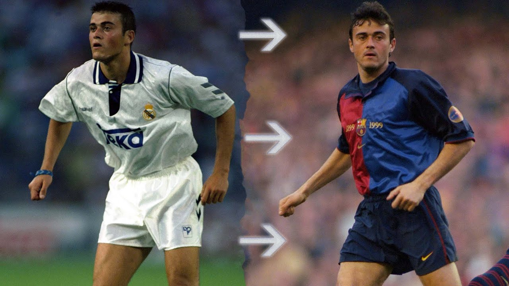
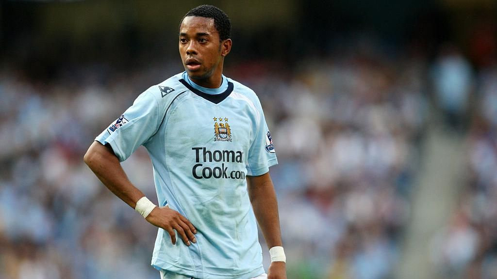

The football world is no stranger to blockbuster transfers that shake things up and get fans buzzing. But every so often, a transfer deal comes along that truly shocks and rocks the sport. Whether it's fierce rivals selling their best players to each other, record-breaking fees being paid, or controversial superstars switching sides unexpectedly, these moves make headlines and get people talking for years to come.
In this blog post, we take a look at 10 of the most earth-shattering and shocking transfers in football history. These are deals that came out of nowhere and caught supporters completely off guard. From world record fees to bitter betrayals to transfers that seemed unthinkable at the time, we countdown the biggest stunners ever seen in the beautiful game. Relive the surprise and disbelief sparked by these monumental transfers that no one saw coming. The sensational deals on this list caused jaws to drop and made people wonder "How did that just happen?".
10. Paul Pogba from Man United to Juventus (2012)
Sir Alex Ferguson was left shocked when teenage midfielder Paul Pogba decided to walk away from Manchester United on a free transfer to join Juventus in 2012. Pogba grew frustrated by his lack of playing time at Old Trafford and opted to move abroad to gain more first-team opportunities. United fans were outraged that such a promising young talent was allowed to leave for nothing, especially when Pogba began fulfilling his immense potential in Serie A. His departure was the beginning of the fractured relationship between Pogba and Ferguson, who later stated his biggest management regret was not giving Pogba more of a chance to develop at United. Juventus gained a future superstar for free while United lost one, making it one of the most shocking transfers of money left on the table.
9. Ronaldinho from PSG to Barcelona (2003)
Barcelona pulled off a transfer coup in 2003 by signing Brazilian superstar Ronaldinho from Paris Saint-Germain for €30 million. Ronaldinho had shone at the 2002 World Cup, establishing himself as one of the most exciting talents in world football. His shock move to Barça came after Manchester United had failed to land the Brazilian earlier that summer. At the time, Barcelona were rebuilding after some lean years but Ronaldinho's arrival signaled a change in fortune. His flair, skill, and infectious smile ushered in Barça's era of dominance under Frank Rijkaard. Ronaldinho became a Camp Nou legend, leading Barcelona to back-to-back La Liga titles and their first Champions League in 14 years. Capturing his signature transformed the club's fortunes, making this transfer a monumental and shocking turning point.
8. Andy Carroll from Newcastle to Liverpool (2011)
On deadline day in January 2011, Liverpool pulled off one of the most shocking and expensive transfers in their history by signing Newcastle striker Andy Carroll for £35 million. This astonishingly high fee came mere hours after Liverpool had sold Fernando Torres to Chelsea for £50 million. Spending such a huge sum to replace Torres with Carroll, who had only shown glimpses of his potential, left many scratching their heads. The young English striker struggled with injuries and form at Anfield, scoring just 11 goals in 58 games before being loaned and eventually sold at a £20 million loss for Liverpool. Carroll's exorbitant price tag and subsequent failure to deliver made this one of the most confusing and shocking transfer decisions, especially under the pressure of a deadline day.
7. David Beckham from Man United to Real Madrid (2003)
David Beckham sent shockwaves through the football world when he left Manchester United to join Spanish giants Real Madrid in 2003. Beckham had become a global superstar at Old Trafford, helping United win six Premier League titles. However, his relationship with manager Sir Alex Ferguson deteriorated after an infamous dressing room incident. When Madrid came calling with a €35 million bid, Ferguson agreed to sell the England captain. Beckham's departure rocked United fans while Madrid rejoiced signing one of football's most marketable players ever. Beckham may have achieved more success at United but he become an icon in Madrid. His first Galactico signing ushered in Madrid's era of lavish spending on superstar players, making this a landmark transfer that massively shocked football.
6. Carlos Tevez and Javier Mascherano to West Ham (2006)
Two of South America's biggest superstars, Carlos Tevez and Javier Mascherano, shocked world football by joining West Ham United in 2006. In a deadline day double deal, the Argentine duo signed for the struggling Premier League club from Brazilian team Corinthians. It was seen as a bizarre move for two players of such calibre to leave high profile clubs in South America to join West Ham, who were battling relegation. The transfers were facilitated by businessman Kia Joorabchian and were mired in controversy regarding third party ownership. Nevertheless, Tevez would go onto score the vital goals to keep West Ham up, endearing himself to fans. While Mascherano quickly departed for Liverpool, the shock arrivals of these two Argentina interntionals briefly made West Ham the talk of world football.
5. Ashley Cole from Arsenal to Chelsea (2006)
England left-back Ashley Cole caused outrage when he moved directly from Arsenal to rivals Chelsea in 2006 for £5 million and William Gallas. Cole had come up through the Arsenal academy but was part of the 'Invincibles' side. However, after a tapping up scandal, where Chelsea were fined for illegally approaching Cole, the defender quickly pushed for a move. Arsenal fans labelled Cole 'Cashley' and a traitor for forcing his way out to a direct rival. The controversial transfer shocked football given Cole's status at Arsenal and the tense rivalry with Chelsea. Cole would go on to win further honours at Stamford Bridge, establishing himself as one of the world's best left-backs. But his acrimonious departure from North London severed his Arsenal legacy, making him a hated figure amongst Gunners' fans.
4. Luis Enrique from Real Madrid to Barcelona (1996)
In a rare transfer between the bitter El Clasico rivals, Luis Enrique made a controversial switch directly from Real Madrid to Barcelona in 1996. The Spanish midfielder had come through Madrid's youth system and played over 100 games for their first team. Moving directly to Barcelona was almost unheard of between the fiercely partisan clubs. Barcelona paid around £3 million to activate Enrique's release clause, shocking Madrid fans. However, Enrique became a key player under Bobby Robson and Louis van Gaal, winning 2 consecutive La Ligas and the Copa del Rey. He endeared himself to Culés and scored against Los Blancos in his first Clasico appearance. While cross-city switches are more common nowadays, Enrique's controversial transfer paved the way and shocked Spanish football at the time.
3. Sol Campbell from Tottenham to Arsenal (2001)

Sol Campbell caused outrage in 2001 when he crossed the North London divide to join rivals Arsenal on a free transfer from Tottenham. As Spurs captain, Campbell was a fan favorite during his 10 years there. His departure to Arsenal stunned the football world given the intense rivalry between the two clubs. Spurs fans branded Campbell 'Judas' and a traitor for the shock move. Campbell proved critics wrong as he formed a legendary partnership with Tony Adams, winning 2 Premier League titles and 3 FA Cups with the Gunners. However, he forever ruined his reputation with Spurs supporters in an instant by joining their most despised rivals. The controversy and outrage sparked by Campbell's transfer made it one of the most shocking moves in Premier League history.
2. Robinho from Real Madrid to Manchester City (2008)
Manchester City had already shocked football by being bought by Abu Dhabi owners, but the lavish spending reached new heights in 2008. On the same day Sheikh Mansour completed his City takeover, the club smashed the British transfer record to sign Brazilian star Robinho from Real Madrid for £32.5 million. Robinho was regarded as one of the most skillful wingers in the world during his time at Madrid. For him to leave the Santiago Bernabeu to join the Premier League's perennial underachievers was astounding. City supporters could barely believe Robinho was wearing sky blue at the time. This mega-money transfer announced City's arrival as a major force, backed by the immense wealth of their new owners. Signing a world-class talent like Robinho was a significant statement of intent that shocked football.
1. Luis Figo from Barcelona to Real Madrid (2000)

The world record €62 million transfer of Luis Figo from Barcelona to arch-rivals Real Madrid in 2000 sent shockwaves through football. Figo was a beloved star at the Camp Nou, winning two La Liga titles, two Copa del Reys, and the UEFA Cup Winners' Cup. However, Real Madrid triggered Figo's record release clause and he made the controversial switch to the Bernabeu. Barcelona fans felt utterly betrayed and greeted Figo's return with Barcelona with deafening boos and pig heads thrown on the pitch. The transfer fee was unprecedented at the time and Figo's direct move embittered El Clasico forever. The Galacticos era was born at Madrid as Perez began his mission to assemble the world's best players. While the move brought Figo success, he forever ruined his Barcelona legacy in an act of betrayal that will never be forgotten.
The football transfers on this list shocked supporters and transformed clubs in an instant. Each one had its fair share of controversy, outrage and disbelief when they were announced. From Sol Campbell's bitter betrayal to Robinho's mega-money deadline day transfer, these moves came out of nowhere to stun fans. Luis Figo's world record switch to Real Madrid tops our list as the most shocking transfer ever seen, sparking a new era of spending in football.
While other sports have seen their fair share of controversies, football transfers evoke raw passion and emotion like no other. Fans view their clubs as lifelong allegiances rather than franchises, making these controversial player moves cut deep. The outrage, bitterness and ensuing drama is what makes the transfer market so utterly engrossing for football fans. These ten transfers will forever be remembered for their unbelievable, earth-shattering shock value that left the football world speechless.